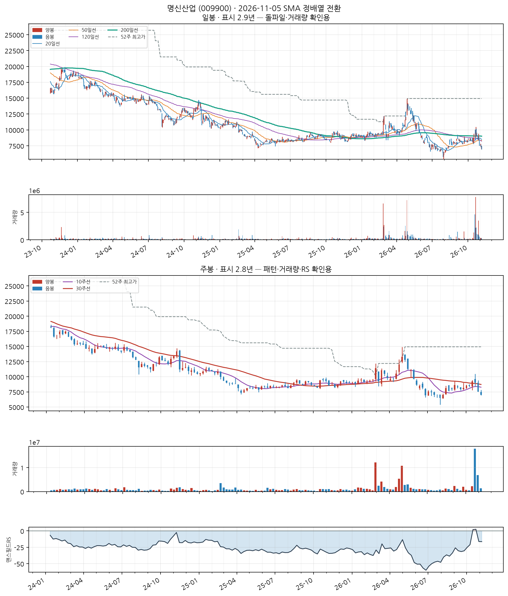
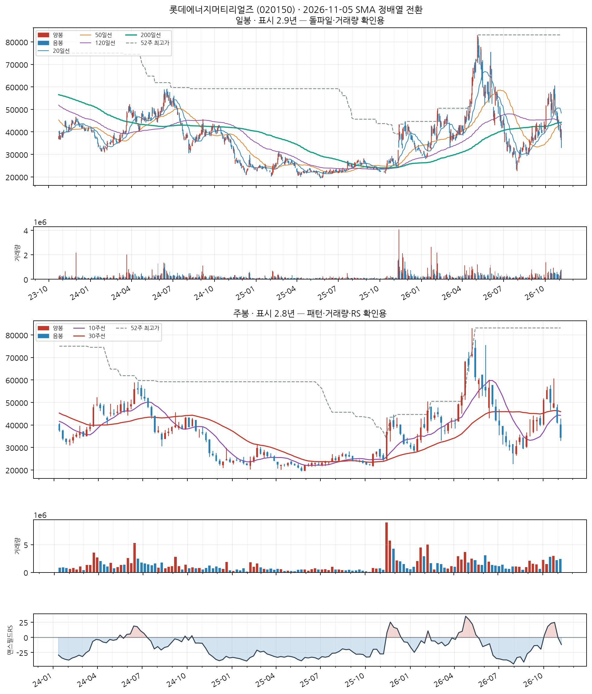
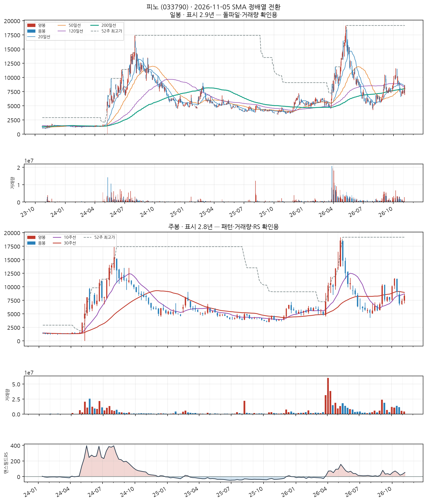
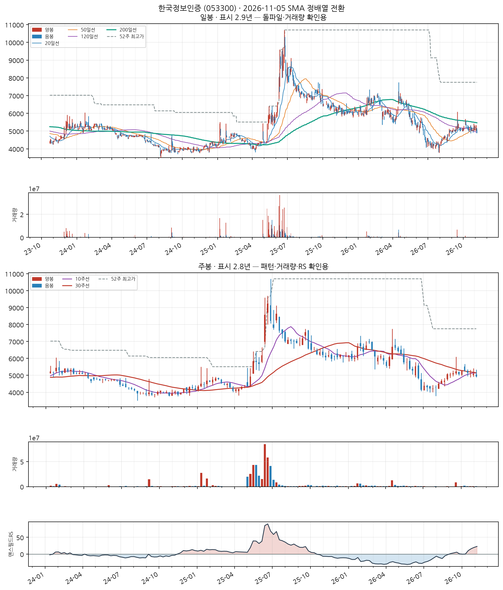
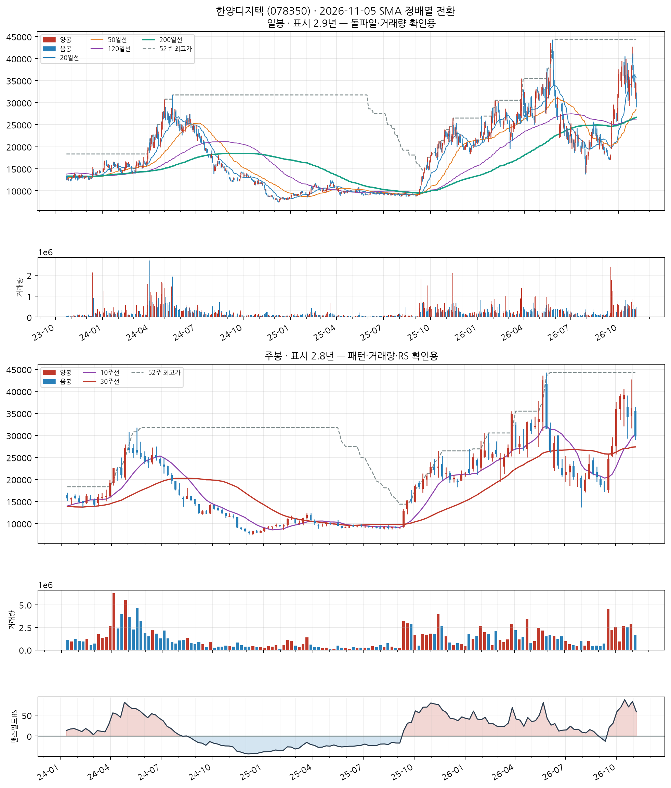
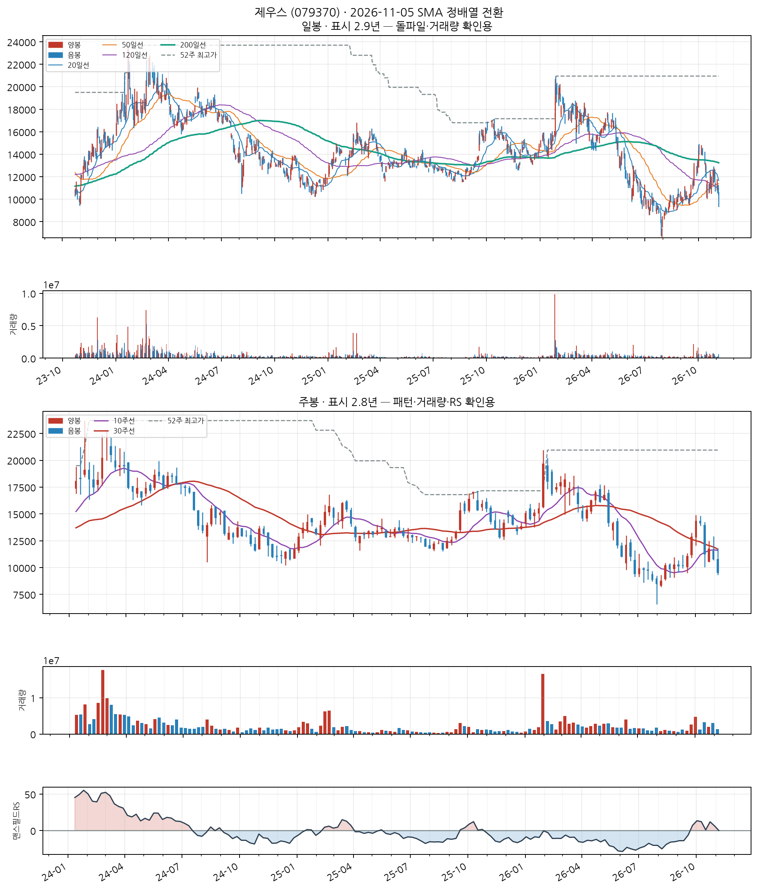
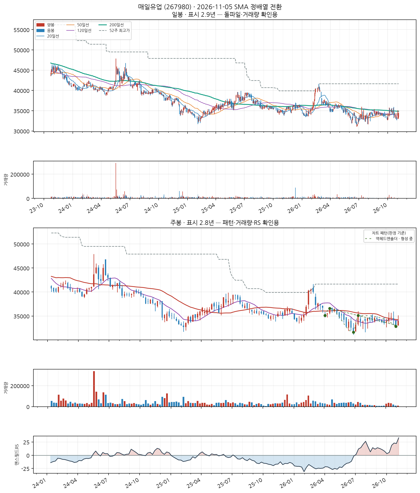

이 전략의 진입 조건
- SMA 정배열 성립 — 20일선 > 50일선 > 120일선 순서가 오늘 성립할 것
- 정배열이 최근에 시작 — 그 정배열이 시작된 지 10거래일 이내일 것 (이미 오래 정배열이던 종목은 제외 — '막 시작한 것'만 잡습니다)
자세히 — 한계와 주의사항
이 두 조건이 게이트 전부입니다. 나머지(거래량·모멘텀)는 순위를 매기는 점수일 뿐 통과 여부를 가르지 않습니다.
점수 = 신선도 + 거래량배수 + 모멘텀
· 신선도: 정배열이 시작된 지 얼마나 됐는지 (오늘 막 시작 = 1.0)
· 거래량배수: 오늘 거래량 ÷ 최근 평균 거래량 (최대 3배)
· 모멘텀: 정배열 시작일 종가 대비 오늘 종가 상승률 ÷ 10 (하락 중이면 0)
52주 신고가 스캐너와 목적이 반대입니다 — 그쪽은 이미 오래 오른 리더주를 계속 잡고, 이쪽은 이제 막 추세가 만들어진 종목만 잡습니다.
백테스트 파라미터(손절 −8%, 익절 +24% 등)는 52주 신고가 스캐너에서 그대로 가져온 값이고 Launch Pad 자체 데이터로 재튜닝한 적이 없습니다.
명신산업 (009900)
3일전 포착
KOSPI
자동차 신품 부품 제조업
업종 참고: RS 평균 46/99(업종 중 상위 65%) · 오늘 신호 3건 · 업종 평균이 코스피 대비 -0.6%p(126일), 종목별 편차 ±22%p
🧪 자체 섹터 분류(실험적, 참고용): 유니퀘스트·제주반도체 등 25종목 (업종 혼재)
섹터 내 RS 순위: 10/25위 (RS 33/99)
섹터 1~3위: 유니퀘스트(97), 제주반도체(88), 세보엠이씨(74)
※ 자체 상관관계 계산(최근 1년) — 검증 시 기준업종 11개 중 8개 정확. 주 단위로 구성종목이 일부 바뀔 수 있음(주간 일치도 실측 0.53)
종가 7,010 · 거래대금 23억
정배열 4일차거래량비 0.2x정배열 후 -9.7%
손절 6,449 | 목표 8,692 | 수량 1,426주

📐 차트 패턴: 약한 유사 — 역헤드앤숄더 형성 중 확신 낮음 판정 기준(PDF)
오른쪽 어깨(7,510) 부근에 머물러 있어 어깨가 완성됐다고 보기 이르다.
가장 강한 반증 선행 추세: 선행 추세가 상승(+6.9%) — 상승 중 눌림일 수 있어 반전형 전제가 없다
경쟁 후보·더 단순한 설명 더 단순한 설명: 선행 하락이 없어 반전형이 아니라 상승 추세 중 눌림(조정)일 수 있다
측정표 (주봉 종가 기준, 판정일 2026-11-05 이후 데이터 미사용)
조건별 판정
- 미충족 선행 추세 — 선행 추세가 상승(+6.9%) — 상승 중 눌림일 수 있어 반전형 전제가 없다
- 충족 머리 깊이 — 양 어깨 대비 최소 13.3% ≥ 3.5%
- 부분충족 어깨 대칭 — 어깨 높이차 19.2% — 15% 초과
- 충족 기간 — 어깨 간 34주 ≥ 6주
- 충족 시간 대칭 — 머리 좌우 기간 비 0.62
- 부분충족 넥라인 기울기 — 주당 -1.3% — 기울기 큼
- 부분충족 오른쪽 어깨 매도 약화 — 오른쪽 어깨 부근 거래량 = 머리 부근의 21.10배
- 충족 최근성 — 마지막 구조 피벗(2026-10-30)이 0주 전
- 미충족 넥라인 돌파 — 종가가 아직 확인선 위로 안 올라옴(-15.6%)
- 판정불가 돌파 거래량 — 돌파 전
추가로 필요한 데이터 장중 고저 기준 깊이(여기 수치는 주봉 종가 기준) · 이번 주 완결 주봉(2026-11-06 라벨) — 미완결이라 판정에서 제외
패턴만으로 매수 추천이나 목표 달성 확률을 만들지 않습니다. 수치 기준은 잠정치이며 라벨 데이터로 검증되지 않았습니다.
CC — 분기 실적 성장 우수
2026 반기보고서(누적) · EPS 흑자전환(+nan원→+563원) · 매출 흑자전환(+nan억원→+4,971억원)
DART 공시 기준 · 분기 단독 전년동기 대비
AA — 연간 실적 성장 미흡
2025 사업보고서(연간) · 순이익 -47.1% · EPS -47.1% · 매출 +2.9%
DART 공시 기준 · 연간 전년동기 대비 · 최근 3년 연속 증가는 아님 — 오닐 A 기준 미충족으로 한 단계 낮춤
NN — 신고가·모멘텀 데이터 없음
신고가 데이터 없음
SS — 수급(거래량) 미흡
20일 평균 대비 0.23배
유통주식수·순매수 데이터는 미보유 (거래량으로만 근사)
LL — 주도주(상대강도) 보통
RS 등급 33/99 (126거래일 ≈ 6개월 기준 · 유니버스 1000종목 중 백분위) · 지수대비 -12.0%p
상위 시가총액 유니버스 기준 — KRX 전체 대비 백분위 아님 · 오닐의 RS Rating은 52주 기준이지만 여기는 126거래일로, 같은 리포트의 6개월 모멘텀과 기간을 맞춘 값이다(원전과 다름)
II — 기관·외국인 수급 미흡
20일 순매수 -3.22% (거래대금 대비) · 최근절반 +1.50% vs 이전절반 -5.29% (개선) · 순매수 11일 · 누적 -84.7억원
**오닐의 I(기관 보유 종목 수의 증가)가 아니라 단기 순매수 흐름**을 쓴 대용값이다 — 보유 기관 수는 국내에 공개 데이터가 없다 · 한국투자증권 공식 API(KIS) 기준 · 기관+외국인 합산, 기타법인 제외로 거래대금은 소폭 과소추정 · 임계값은 아직 실측 검증 전 잠정치 — 수급 이력이 쌓이면 다른 지표와 같은 방식으로 구분력을 측정해 조정 예정
MM — 시장방향 미흡
KOSPI 지수가 60일선 아래
**오닐의 M(분산일·추종일 계수)이 아니라 지수의 이동평균 상회 여부**를 쓴 대용값이다 · 실제 매매 필터로는 미적용(표시 전용) — 종목 선별보다 지수 자체 타이밍이 더 효율적이라는 자체 검증 결과 있음 (reports/vs_kospi.md)
롯데에너지머티리얼즈 (020150)
신규
KOSPI
전자부품 제조업
업종 참고: RS 평균 40/99(업종 중 상위 73%) · 오늘 신호 2건 · 업종 평균이 코스닥 대비 +8.5%p(126일), 종목별 편차 ±26%p
🧪 자체 섹터 분류(실험적, 참고용): 이수화학·후성 등 22종목 (업종 혼재)
섹터 내 RS 순위: 17/22위 (RS 19/99)
섹터 1~3위: 이수화학(79), 후성(51), 애경케미칼(48)
※ 자체 상관관계 계산(최근 1년) — 검증 시 기준업종 11개 중 8개 정확. 주 단위로 구성종목이 일부 바뀔 수 있음(주간 일치도 실측 0.53)
종가 34,300 · 거래대금 276억
정배열 1일차거래량비 1.5x정배열 후 +0.0%
손절 31,556 | 목표 42,532 | 수량 291주

📐 차트 패턴: 약한 유사 — 역헤드앤숄더 형성 중 확신 낮음 판정 기준(PDF)
오른쪽 어깨(41,000) 부근에 머물러 있어 어깨가 완성됐다고 보기 이르다.
가장 강한 반증 선행 추세: 선행 추세가 상승(+54.6%) — 상승 중 눌림일 수 있어 반전형 전제가 없다
경쟁 후보·더 단순한 설명 더 단순한 설명: 선행 하락이 없어 반전형이 아니라 상승 추세 중 눌림(조정)일 수 있다
측정표 (주봉 종가 기준, 판정일 2026-11-05 이후 데이터 미사용)
조건별 판정
- 미충족 선행 추세 — 선행 추세가 상승(+54.6%) — 상승 중 눌림일 수 있어 반전형 전제가 없다
- 충족 머리 깊이 — 양 어깨 대비 최소 26.6% ≥ 3.5%
- 충족 어깨 대칭 — 어깨 높이차 9.1% ≤ 15%
- 충족 기간 — 어깨 간 33주 ≥ 6주
- 충족 시간 대칭 — 머리 좌우 기간 비 0.65
- 부분충족 넥라인 기울기 — 주당 -1.0% — 기울기 큼
- 부분충족 오른쪽 어깨 매도 약화 — 오른쪽 어깨 부근 거래량 = 머리 부근의 2.87배
- 충족 최근성 — 마지막 구조 피벗(2026-10-30)이 0주 전
- 미충족 넥라인 돌파 — 종가가 아직 확인선 위로 안 올라옴(-23.1%)
- 판정불가 돌파 거래량 — 돌파 전
추가로 필요한 데이터 장중 고저 기준 깊이(여기 수치는 주봉 종가 기준) · 이번 주 완결 주봉(2026-11-06 라벨) — 미완결이라 판정에서 제외
패턴만으로 매수 추천이나 목표 달성 확률을 만들지 않습니다. 수치 기준은 잠정치이며 라벨 데이터로 검증되지 않았습니다.
CC — 분기 실적 성장 미흡
2026 반기보고서(누적) · 순이익 적자확대(+nan억원→-188억원) · EPS 적자확대(+nan원→-391원) · 매출 흑자전환(+nan억원→+1,942억원)
DART 공시 기준 · 분기 단독 전년동기 대비 · 직전 분기보다 성장률이 낮아짐(감속) — 오닐 C 기준으로 한 단계 낮춤
AA — 연간 실적 성장 미흡
2025 사업보고서(연간) · 순이익 적자전환(+288억원→-1,672억원) · 매출 -24.9%
DART 공시 기준 · 연간 전년동기 대비 · 최근 3년 연속 증가는 아님 — 오닐 A 기준 미충족으로 한 단계 낮춤 · EPS 데이터가 없어 순이익·매출로만 판정 — 자사주 매입 착시를 거르지 못함
NN — 신고가·모멘텀 데이터 없음
신고가 데이터 없음
SS — 수급(거래량) 우수
20일 평균 대비 1.52배
유통주식수·순매수 데이터는 미보유 (거래량으로만 근사)
LL — 주도주(상대강도) 미흡
RS 등급 19/99 (126거래일 ≈ 6개월 기준 · 유니버스 1000종목 중 백분위) · 지수대비 -23.2%p
상위 시가총액 유니버스 기준 — KRX 전체 대비 백분위 아님 · 오닐의 RS Rating은 52주 기준이지만 여기는 126거래일로, 같은 리포트의 6개월 모멘텀과 기간을 맞춘 값이다(원전과 다름)
II — 기관·외국인 수급 미흡
20일 순매수 -3.92% (거래대금 대비) · 최근절반 -11.37% vs 이전절반 +1.07% (약화) · 순매수 6일 · 누적 -209.7억원
**오닐의 I(기관 보유 종목 수의 증가)가 아니라 단기 순매수 흐름**을 쓴 대용값이다 — 보유 기관 수는 국내에 공개 데이터가 없다 · 한국투자증권 공식 API(KIS) 기준 · 기관+외국인 합산, 기타법인 제외로 거래대금은 소폭 과소추정 · 임계값은 아직 실측 검증 전 잠정치 — 수급 이력이 쌓이면 다른 지표와 같은 방식으로 구분력을 측정해 조정 예정
MM — 시장방향 미흡
KOSPI 지수가 60일선 아래
**오닐의 M(분산일·추종일 계수)이 아니라 지수의 이동평균 상회 여부**를 쓴 대용값이다 · 실제 매매 필터로는 미적용(표시 전용) — 종목 선별보다 지수 자체 타이밍이 더 효율적이라는 자체 검증 결과 있음 (reports/vs_kospi.md)
일차전지 및 이차전지 제조업
업종 참고: RS 평균 40/99(업종 중 상위 75%) · 오늘 신호 3건 · 업종 평균이 코스닥 대비 +6.1%p(126일), 종목별 편차 ±21%p
🧪 자체 섹터 분류(실험적, 참고용): 네이처셀·비보존 제약 등 25종목 (업종 혼재)
섹터 내 RS 순위: 16/25위 (RS 26/99)
섹터 1~3위: 네이처셀(93), 비보존 제약(92), 지씨지놈(91)
※ 자체 상관관계 계산(최근 1년) — 검증 시 기준업종 11개 중 8개 정확. 주 단위로 구성종목이 일부 바뀔 수 있음(주간 일치도 실측 0.53)
종가 8,350
정배열 1일차거래량비 0.0x정배열 후 +0.0%
손절 7,682 | 목표 10,354 | 수량 1,197주

📐 차트 패턴 판정: 후보 없음 후보 없음 판정 기준(PDF)
세 패턴 모두 필수 조건을 채운 후보가 없다(가장 가까운 컵위드핸들 후보: 핸들: 핸들 저점 6,880가 컵 중간값 9,550 아래 — 핸들이 아니라 컵 재하락).
가장 강한 반증 컵위드핸들: 핸들: 핸들 저점 6,880가 컵 중간값 9,550 아래 — 핸들이 아니라 컵 재하락; 이중바닥: 최근성: 마지막 구조 피벗(2026-07-31)이 13주 전 — 기준 12주 이내, 지금 베이스가 아니다
경쟁 후보·더 단순한 설명 더 단순한 설명: 최근 26주 하락 추세 지속(-45.4%) — 베이스 없음
추가로 필요한 데이터 장중 고저 기준 깊이(여기 수치는 주봉 종가 기준) · 이번 주 완결 주봉(2026-11-06 라벨) — 미완결이라 판정에서 제외
패턴만으로 매수 추천이나 목표 달성 확률을 만들지 않습니다. 수치 기준은 잠정치이며 라벨 데이터로 검증되지 않았습니다.
CC — 분기 실적 성장 미흡
2026 반기보고서(누적) · 순이익 적자확대(+nan억원→-17억원) · EPS 적자확대(+nan원→-21원)
DART 공시 기준 · 분기 단독 전년동기 대비 · 직전 분기보다 성장률이 낮아짐(감속) — 오닐 C 기준으로 한 단계 낮춤
AA — 연간 실적 성장 미흡
2025 사업보고서(연간) · 순이익 적자확대(-25억원→-59억원) · EPS 적자확대(-111원→-135원) · 매출 +763.1%
DART 공시 기준 · 연간 전년동기 대비 · 최근 3년 연속 증가는 아님 — 오닐 A 기준 미충족으로 한 단계 낮춤
NN — 신고가·모멘텀 데이터 없음
신고가 데이터 없음
SS — 수급(거래량) 판정불가
당일 거래량 0
거래정지 등으로 거래가 없어 판단 불가 — 다른 지표의 가격·모멘텀도 정지 직전 값으로 고정돼 있을 수 있음
LL — 주도주(상대강도) 미흡
RS 등급 26/99 (126거래일 ≈ 6개월 기준 · 유니버스 1000종목 중 백분위) · 지수대비 -3.2%p
상위 시가총액 유니버스 기준 — KRX 전체 대비 백분위 아님 · 오닐의 RS Rating은 52주 기준이지만 여기는 126거래일로, 같은 리포트의 6개월 모멘텀과 기간을 맞춘 값이다(원전과 다름)
II — 기관·외국인 수급 미흡
20일 순매수 -3.34% (거래대금 대비) · 최근절반 -1.69% vs 이전절반 -3.81% (개선) · 순매수 4일 · 누적 -121.1억원
**오닐의 I(기관 보유 종목 수의 증가)가 아니라 단기 순매수 흐름**을 쓴 대용값이다 — 보유 기관 수는 국내에 공개 데이터가 없다 · 한국투자증권 공식 API(KIS) 기준 · 기관+외국인 합산, 기타법인 제외로 거래대금은 소폭 과소추정 · 임계값은 아직 실측 검증 전 잠정치 — 수급 이력이 쌓이면 다른 지표와 같은 방식으로 구분력을 측정해 조정 예정
MM — 시장방향 미흡
KOSDAQ 지수가 20일선 아래
**오닐의 M(분산일·추종일 계수)이 아니라 지수의 이동평균 상회 여부**를 쓴 대용값이다 · 실제 매매 필터로는 미적용(표시 전용) — 종목 선별보다 지수 자체 타이밍이 더 효율적이라는 자체 검증 결과 있음 (reports/vs_kospi.md)
한국정보인증 (053300)
3일전 포착
KOSDAQ
소프트웨어 개발 및 공급업
업종 참고: RS 평균 57/99(업종 중 상위 46%) · 오늘 신호 3건 · 업종 평균이 코스닥 대비 +26.6%p(126일), 종목별 편차 ±37%p
🧪 자체 섹터 분류(실험적, 참고용): 한국정보인증·쿠콘 등 10종목 (업종 혼재)
섹터 내 RS 순위: 1/10위 (RS 64/99)
섹터 1~3위: 한국정보인증(64), 쿠콘(60), 우리기술투자(56)
※ 자체 상관관계 계산(최근 1년) — 검증 시 기준업종 11개 중 8개 정확. 주 단위로 구성종목이 일부 바뀔 수 있음(주간 일치도 실측 0.53)
종가 4,935 · 거래대금 6.1억
정배열 10일차거래량비 0.7x정배열 후 -3.6%
손절 4,540 | 목표 6,119 | 수량 2,026주

📐 차트 패턴 판정: 후보 없음 후보 없음 판정 기준(PDF)
세 패턴 모두 필수 조건을 채운 후보가 없다(가장 가까운 이중바닥 후보: 두 저점 일치: 저점 차이 25.3% — 같은 지지대로 보기 어려움(10% 초과)).
가장 강한 반증 이중바닥: 두 저점 일치: 저점 차이 25.3% — 같은 지지대로 보기 어려움(10% 초과)
경쟁 후보·더 단순한 설명 더 단순한 설명: 최근 26주 하락 추세 지속(-20.7%) — 베이스 없음
추가로 필요한 데이터 장중 고저 기준 깊이(여기 수치는 주봉 종가 기준) · 이번 주 완결 주봉(2026-11-06 라벨) — 미완결이라 판정에서 제외
패턴만으로 매수 추천이나 목표 달성 확률을 만들지 않습니다. 수치 기준은 잠정치이며 라벨 데이터로 검증되지 않았습니다.
CC — 분기 실적 성장 우수
2026 반기보고서(누적) · 순이익 흑자전환(+nan억원→+60억원) · EPS 흑자전환(+nan원→+132원) · 매출 흑자전환(+nan억원→+369억원)
DART 공시 기준 · 분기 단독 전년동기 대비 · 직전 분기보다 성장률이 높아짐(가속)
AA — 연간 실적 성장 양호
2025 사업보고서(연간) · 순이익 +126.0% · EPS +138.7% · 매출 +13.6%
DART 공시 기준 · 연간 전년동기 대비 · 최근 3년 연간 EPS 연속 증가
NN — 신고가·모멘텀 데이터 없음
신고가 데이터 없음
SS — 수급(거래량) 미흡
20일 평균 대비 0.74배
유통주식수·순매수 데이터는 미보유 (거래량으로만 근사)
LL — 주도주(상대강도) 보통
RS 등급 64/99 (126거래일 ≈ 6개월 기준 · 유니버스 1000종목 중 백분위) · 지수대비 +23.7%p
상위 시가총액 유니버스 기준 — KRX 전체 대비 백분위 아님 · 오닐의 RS Rating은 52주 기준이지만 여기는 126거래일로, 같은 리포트의 6개월 모멘텀과 기간을 맞춘 값이다(원전과 다름)
II — 기관·외국인 수급 양호
20일 순매수 +12.43% (거래대금 대비) · 최근절반 +5.96% vs 이전절반 +20.29% (약화) · 순매수 17일 · 누적 +19.9억원
**오닐의 I(기관 보유 종목 수의 증가)가 아니라 단기 순매수 흐름**을 쓴 대용값이다 — 보유 기관 수는 국내에 공개 데이터가 없다 · 한국투자증권 공식 API(KIS) 기준 · 기관+외국인 합산, 기타법인 제외로 거래대금은 소폭 과소추정 · 임계값은 아직 실측 검증 전 잠정치 — 수급 이력이 쌓이면 다른 지표와 같은 방식으로 구분력을 측정해 조정 예정 · 최근 유입이 이전보다 약해져 한 단계 낮춤
MM — 시장방향 미흡
KOSDAQ 지수가 20일선 아래
**오닐의 M(분산일·추종일 계수)이 아니라 지수의 이동평균 상회 여부**를 쓴 대용값이다 · 실제 매매 필터로는 미적용(표시 전용) — 종목 선별보다 지수 자체 타이밍이 더 효율적이라는 자체 검증 결과 있음 (reports/vs_kospi.md)
한양디지텍 (078350)
3일전 포착
KOSDAQ
반도체 제조업
업종 참고: RS 평균 37/99(업종 중 상위 79%) · 오늘 신호 2건 · 업종 평균이 코스닥 대비 +9.7%p(126일), 종목별 편차 ±44%p
🧪 자체 섹터 분류(실험적, 참고용): 특수 목적용 기계 제조업 (엑시콘·마이크로컨텍솔 등 19종목)
섹터 내 RS 순위: 4/19위 (RS 87/99)
섹터 1~3위: 엑시콘(97), 마이크로컨텍솔(96), 티에프이(93)
※ 자체 상관관계 계산(최근 1년) — 검증 시 기준업종 11개 중 8개 정확. 주 단위로 구성종목이 일부 바뀔 수 있음(주간 일치도 실측 0.53)
종가 29,800 · 거래대금 142억
정배열 10일차거래량비 1.0x정배열 후 -12.7%
손절 27,416 | 목표 36,952 | 수량 335주

📐 차트 패턴: 약한 유사 — 이중바닥 돌파 확인 확신 낮음 판정 기준(PDF)
두 저점(18,070/17,560) 뒤 중간 고점 23,550를 종가로 넘었다.
가장 강한 반증 선행 추세: 선행 추세가 상승(+105.3%) — 상승 중 눌림일 수 있어 반전형 전제가 없다
경쟁 후보·더 단순한 설명 더 단순한 설명: 선행 하락이 없어 반전형이 아니라 상승 추세 중 눌림(조정)일 수 있다
측정표 (주봉 종가 기준, 판정일 2026-11-05 이후 데이터 미사용)
조건별 판정
- 미충족 선행 추세 — 선행 추세가 상승(+105.3%) — 상승 중 눌림일 수 있어 반전형 전제가 없다
- 충족 두 저점 일치 — 저점 차이 2.8% ≤ 6% · 두 번째 저점이 첫 저점을 언더컷(IBD 선호)
- 부분충족 중간 반등 — 중간 반등 34.1% — 30%를 넘어 W가 아니라 독립된 두 파동일 수 있음
- 충족 기간 — 베이스 23주 ≥ 7주
- 미충족 깊이 — 베이스 깊이 58.7% — 50% 초과
- 부분충족 저점2 매도 약화 — 저점2 부근 거래량 = 저점1 부근의 2.96배
- 충족 최근성 — 돌파 주(2026-09-18)가 6주 전
- 충족 넥라인 돌파 — 2026-09-18 주 종가 24,700 > 확인선 — 돌파 후 6주 경과
- 충족 돌파 거래량 — 돌파 주 거래량 = 직전 10주 평균의 7.42배
추가로 필요한 데이터 장중 고저 기준 깊이(여기 수치는 주봉 종가 기준) · 이번 주 완결 주봉(2026-11-06 라벨) — 미완결이라 판정에서 제외
패턴만으로 매수 추천이나 목표 달성 확률을 만들지 않습니다. 수치 기준은 잠정치이며 라벨 데이터로 검증되지 않았습니다.
CC — 분기 실적 성장 우수
2026 반기보고서(누적) · 순이익 흑자전환(+nan억원→+111억원) · EPS 흑자전환(+nan원→+731원) · 매출 흑자전환(+nan억원→+2,580억원)
DART 공시 기준 · 분기 단독 전년동기 대비 · 직전 분기보다 성장률이 높아짐(가속)
AA — 연간 실적 성장 미흡
2025 사업보고서(연간) · 순이익 -41.3% · EPS -40.1% · 매출 +9.4%
DART 공시 기준 · 연간 전년동기 대비 · 최근 3년 연속 증가는 아님 — 오닐 A 기준 미충족으로 한 단계 낮춤
NN — 신고가·모멘텀 데이터 없음
신고가 데이터 없음
SS — 수급(거래량) 미흡
20일 평균 대비 0.96배
유통주식수·순매수 데이터는 미보유 (거래량으로만 근사)
LL — 주도주(상대강도) 우수
RS 등급 87/99 (126거래일 ≈ 6개월 기준 · 유니버스 1000종목 중 백분위) · 지수대비 +43.7%p
상위 시가총액 유니버스 기준 — KRX 전체 대비 백분위 아님 · 오닐의 RS Rating은 52주 기준이지만 여기는 126거래일로, 같은 리포트의 6개월 모멘텀과 기간을 맞춘 값이다(원전과 다름)
II — 기관·외국인 수급 양호
20일 순매수 +4.52% (거래대금 대비) · 최근절반 +2.64% vs 이전절반 +6.40% (약화) · 순매수 15일 · 누적 +160.2억원
**오닐의 I(기관 보유 종목 수의 증가)가 아니라 단기 순매수 흐름**을 쓴 대용값이다 — 보유 기관 수는 국내에 공개 데이터가 없다 · 한국투자증권 공식 API(KIS) 기준 · 기관+외국인 합산, 기타법인 제외로 거래대금은 소폭 과소추정 · 임계값은 아직 실측 검증 전 잠정치 — 수급 이력이 쌓이면 다른 지표와 같은 방식으로 구분력을 측정해 조정 예정 · 최근 유입이 이전보다 약해져 한 단계 낮춤
MM — 시장방향 미흡
KOSDAQ 지수가 20일선 아래
**오닐의 M(분산일·추종일 계수)이 아니라 지수의 이동평균 상회 여부**를 쓴 대용값이다 · 실제 매매 필터로는 미적용(표시 전용) — 종목 선별보다 지수 자체 타이밍이 더 효율적이라는 자체 검증 결과 있음 (reports/vs_kospi.md)
제우스 (079370)
3일전 포착
KOSDAQ
특수 목적용 기계 제조업
업종 참고: RS 평균 38/99(업종 중 상위 76%) · 오늘 신호 5건 · 업종 평균이 코스닥 대비 +9.3%p(126일), 종목별 편차 ±40%p
🧪 자체 섹터 분류(실험적, 참고용): 특수 목적용 기계 제조업 (엑시콘·마이크로컨텍솔 등 19종목)
섹터 내 RS 순위: 12/19위 (RS 36/99)
섹터 1~3위: 엑시콘(97), 마이크로컨텍솔(96), 티에프이(93)
※ 자체 상관관계 계산(최근 1년) — 검증 시 기준업종 11개 중 8개 정확. 주 단위로 구성종목이 일부 바뀔 수 있음(주간 일치도 실측 0.53)
종가 9,500 · 거래대금 57억
정배열 7일차거래량비 1.2x정배열 후 -25.1%
손절 8,740 | 목표 11,780 | 수량 1,052주

📐 차트 패턴 판정: 후보 없음 후보 없음 판정 기준(PDF)
세 패턴 모두 필수 조건을 채운 후보가 없다(가장 가까운 역헤드앤숄더 후보: 어깨 대칭: 어깨 높이차 26.3% — 과도(25% 초과)).
가장 강한 반증 역헤드앤숄더: 어깨 대칭: 어깨 높이차 26.3% — 과도(25% 초과); 컵위드핸들: 깊이: 컵 깊이 50.4% — 기준 12%~33%(고변동 최대 50%)를 벗어남; 이중바닥: 두 저점 일치: 저점 차이 21.3% — 같은 지지대로 보기 어려움(10% 초과)
경쟁 후보·더 단순한 설명 더 단순한 설명: 최근 26주 하락 추세 지속(-33.3%) — 베이스 없음
추가로 필요한 데이터 장중 고저 기준 깊이(여기 수치는 주봉 종가 기준) · 이번 주 완결 주봉(2026-11-06 라벨) — 미완결이라 판정에서 제외
패턴만으로 매수 추천이나 목표 달성 확률을 만들지 않습니다. 수치 기준은 잠정치이며 라벨 데이터로 검증되지 않았습니다.
CC — 분기 실적 성장 미흡
2026 반기보고서(누적) · 순이익 적자확대(+nan억원→-79억원) · EPS 적자확대(+nan원→-220원) · 매출 흑자전환(+nan억원→+824억원)
DART 공시 기준 · 분기 단독 전년동기 대비 · 직전 분기보다 성장률이 높아짐(가속)
AA — 연간 실적 성장 미흡
2025 사업보고서(연간) · 순이익 적자전환(+431억원→-141억원) · EPS 적자전환(+1,358원→-192원) · 매출 -21.9%
DART 공시 기준 · 연간 전년동기 대비 · 최근 3년 연속 증가는 아님 — 오닐 A 기준 미충족으로 한 단계 낮춤
NN — 신고가·모멘텀 데이터 없음
신고가 데이터 없음
SS — 수급(거래량) 양호
20일 평균 대비 1.24배
유통주식수·순매수 데이터는 미보유 (거래량으로만 근사)
LL — 주도주(상대강도) 보통
RS 등급 36/99 (126거래일 ≈ 6개월 기준 · 유니버스 1000종목 중 백분위) · 지수대비 +3.2%p
상위 시가총액 유니버스 기준 — KRX 전체 대비 백분위 아님 · 오닐의 RS Rating은 52주 기준이지만 여기는 126거래일로, 같은 리포트의 6개월 모멘텀과 기간을 맞춘 값이다(원전과 다름)
II — 기관·외국인 수급 미흡
20일 순매수 -2.80% (거래대금 대비) · 최근절반 -9.95% vs 이전절반 +3.74% (약화) · 순매수 5일 · 누적 -32.5억원
**오닐의 I(기관 보유 종목 수의 증가)가 아니라 단기 순매수 흐름**을 쓴 대용값이다 — 보유 기관 수는 국내에 공개 데이터가 없다 · 한국투자증권 공식 API(KIS) 기준 · 기관+외국인 합산, 기타법인 제외로 거래대금은 소폭 과소추정 · 임계값은 아직 실측 검증 전 잠정치 — 수급 이력이 쌓이면 다른 지표와 같은 방식으로 구분력을 측정해 조정 예정
MM — 시장방향 미흡
KOSDAQ 지수가 20일선 아래
**오닐의 M(분산일·추종일 계수)이 아니라 지수의 이동평균 상회 여부**를 쓴 대용값이다 · 실제 매매 필터로는 미적용(표시 전용) — 종목 선별보다 지수 자체 타이밍이 더 효율적이라는 자체 검증 결과 있음 (reports/vs_kospi.md)
매일유업 (267980)
2일전 포착
KOSDAQ
동·식물성 유지 및 낙농제품 제조업
업종 참고: RS 평균 81/99(업종 중 상위 4%) · 오늘 신호 1건 · 업종 평균이 코스피 대비 +29.2%p(126일), 종목별 편차 ±14%p
🧪 자체 섹터 분류(실험적, 참고용): 아이마켓코리아·대한제당 등 30종목 (업종 혼재)
섹터 내 RS 순위: 7/30위 (RS 82/99)
섹터 1~3위: 아이마켓코리아(91), 대한제당(87), 멀티캠퍼스(87)
※ 자체 상관관계 계산(최근 1년) — 검증 시 기준업종 11개 중 8개 정확. 주 단위로 구성종목이 일부 바뀔 수 있음(주간 일치도 실측 0.53)
종가 33,950 · 거래대금 1.6억
정배열 7일차거래량비 1.3x정배열 후 +0.9%
손절 31,234 | 목표 42,098 | 수량 294주

📐 역헤드앤숄더 · 형성 중
📐 차트 패턴 판정: 역헤드앤숄더 형성 중 확신 중간 판정 기준(PDF)
오른쪽 어깨(32,850) 부근에 머물러 있어 어깨가 완성됐다고 보기 이르다.
가장 강한 반증 선행 추세: 선행 하락 -0.7% — -15%까지 안 내려옴
경쟁 후보·더 단순한 설명 이중바닥(형성 중·확신 낮음)
측정표 (주봉 종가 기준, 판정일 2026-11-05 이후 데이터 미사용)
조건별 판정
- 부분충족 선행 추세 — 선행 하락 -0.7% — -15%까지 안 내려옴
- 충족 머리 깊이 — 양 어깨 대비 최소 3.7% ≥ 3.5%
- 충족 어깨 대칭 — 어깨 높이차 6.4% ≤ 15%
- 충족 기간 — 어깨 간 30주 ≥ 6주
- 충족 시간 대칭 — 머리 좌우 기간 비 1.50
- 충족 넥라인 기울기 — 주당 -0.3%
- 충족 오른쪽 어깨 매도 약화 — 오른쪽 어깨 부근 거래량 = 머리 부근의 0.45배
- 충족 최근성 — 마지막 구조 피벗(2026-10-30)이 0주 전
- 미충족 넥라인 돌파 — 종가가 아직 확인선 위로 안 올라옴(-0.8%)
- 판정불가 돌파 거래량 — 돌파 전
추가로 필요한 데이터 장중 고저 기준 깊이(여기 수치는 주봉 종가 기준) · 이번 주 완결 주봉(2026-11-06 라벨) — 미완결이라 판정에서 제외
패턴만으로 매수 추천이나 목표 달성 확률을 만들지 않습니다. 수치 기준은 잠정치이며 라벨 데이터로 검증되지 않았습니다.
CC — 분기 실적 성장 양호
2026 반기보고서(누적) · 순이익 흑자전환(+nan억원→+163억원) · EPS 흑자전환(+nan원→+2,215원) · 매출 흑자전환(+nan억원→+4,800억원)
DART 공시 기준 · 분기 단독 전년동기 대비 · 직전 분기보다 성장률이 낮아짐(감속) — 오닐 C 기준으로 한 단계 낮춤
AA — 연간 실적 성장 보통
2025 사업보고서(연간) · 순이익 +23.5% · EPS +22.5% · 매출 +1.8%
DART 공시 기준 · 연간 전년동기 대비 · 최근 3년 연속 증가는 아님 — 오닐 A 기준 미충족으로 한 단계 낮춤
NN — 신고가·모멘텀 데이터 없음
신고가 데이터 없음
SS — 수급(거래량) 양호
20일 평균 대비 1.29배
유통주식수·순매수 데이터는 미보유 (거래량으로만 근사)
LL — 주도주(상대강도) 우수
RS 등급 82/99 (126거래일 ≈ 6개월 기준 · 유니버스 1000종목 중 백분위) · 지수대비 +40.0%p
상위 시가총액 유니버스 기준 — KRX 전체 대비 백분위 아님 · 오닐의 RS Rating은 52주 기준이지만 여기는 126거래일로, 같은 리포트의 6개월 모멘텀과 기간을 맞춘 값이다(원전과 다름)
II — 기관·외국인 수급 양호
20일 순매수 +29.82% (거래대금 대비) · 최근절반 +20.41% vs 이전절반 +34.55% (약화) · 순매수 12일 · 누적 +7.5억원
**오닐의 I(기관 보유 종목 수의 증가)가 아니라 단기 순매수 흐름**을 쓴 대용값이다 — 보유 기관 수는 국내에 공개 데이터가 없다 · 한국투자증권 공식 API(KIS) 기준 · 기관+외국인 합산, 기타법인 제외로 거래대금은 소폭 과소추정 · 임계값은 아직 실측 검증 전 잠정치 — 수급 이력이 쌓이면 다른 지표와 같은 방식으로 구분력을 측정해 조정 예정 · 최근 유입이 이전보다 약해져 한 단계 낮춤
MM — 시장방향 미흡
KOSDAQ 지수가 20일선 아래
**오닐의 M(분산일·추종일 계수)이 아니라 지수의 이동평균 상회 여부**를 쓴 대용값이다 · 실제 매매 필터로는 미적용(표시 전용) — 종목 선별보다 지수 자체 타이밍이 더 효율적이라는 자체 검증 결과 있음 (reports/vs_kospi.md)